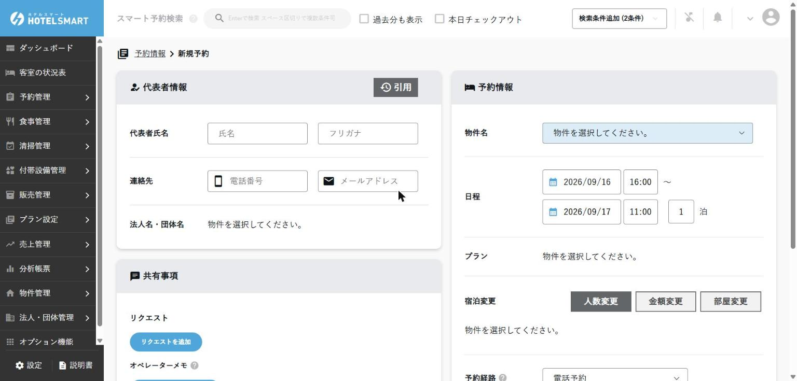

予約から領収書まで
予約・変更・会計
予約を探すところから、登録・変更・精算まで。外部予約は変更する場所を間違えないことが最重要です。
1. 予約を検索する
左メニュー → 予約管理 → 予約情報
まず上部の「スマート予約検索」を使う
- 氏名、ふりがな、電話番号、予約番号、チェックインコードのうち、確実なものを1つ入力します。
- 候補が出たら、宿泊日・人数・電話番号のいずれかを追加で照合します。
- 正しい予約の「詳細」を開きます。
一覧から絞り込む場合
- 「条件を選択して絞り込み」を開きます。
- チェックイン日・チェックアウト日を、探したい期間より少し広めに設定します。
- 必要な場合だけ「過去分も表示」または「本日チェックアウト」を使います。
- 並べ替えを「チェックイン（昇順）」など、目的に合う順へ変更します。
- 代表者名、チェックインコード、宿泊日、部屋名、予約経路、宿泊状況を照合します。
実画面で確認した表示予約一覧には、物件名・代表者名・チェックインコード・イン／アウト・泊数・部屋名・メモ・予約経路・宿泊状況・最終更新・詳細が表示されます。
見つからないとき氏名の漢字／カナ違い、代表者名、前後の日付、キャンセル済み、団体予約も確認します。それでもなければ予約が見つからないへ。
開く前の確認同姓同名を避けるため、必ず「宿泊日・電話番号・人数」のいずれかも照合します。
2. 個人予約を登録する
予約管理 → 予約情報 → 新規予約
- 宿泊日と泊数を入力します。
- 大人・子どもの人数、部屋タイプ、部屋数を選びます。
- 宿泊者名・ふりがな・電話番号を入力します。
- プラン、料金、支払方法を確認します。
- 特記事項があれば、誰が見ても分かる短い文で入力します。
- 内容を読み直して「保存」を1回だけ押します。

二重登録を防ぐ保存後に反応が遅い場合も連打しません。予約一覧で登録済みか確認してから、再操作します。
3. 団体予約を登録する
予約管理 → 予約情報 → 新規予約 → 宿泊変更
団体予約専用の入口はありません。個人予約と同じ「新規予約」画面で、複数部屋・複数人数を設定します。
- 「代表者情報」に団体の代表者氏名と連絡先を入力します。
- 「予約情報」で宿泊日とプランなどの基本条件を入力します。
- 「宿泊変更」の「人数変更」で、部屋タイプ別の室数と各部屋の人数を設定します。
- 「金額変更」で部屋別・日別の料金を確認し、必要な場合だけ責任者ルールに沿って変更します。
- 予約時点で部屋番号まで決める場合は「部屋変更」で割り当てます。
- 「宿泊者情報」で各宿泊者と部屋の対応を確認します。
- 支払い担当・請求先・未定事項を「共有事項」に残し、予約経路と予約受付日時も確認して保存します。
個人予約との違い入口と画面は同じです。違うのは「宿泊変更」で室数・人数・料金・部屋を複数設定する点です。代表者だけ登録して終わらないようにします。
保存前に読み合わせ団体全体の宿泊日・室数・人数・料金と、各部屋の宿泊者割り当てを確認します。
4. 予約内容を変更する
- 予約詳細で「予約経路」を確認します。
- 電話・自社予約なら、変更内容と料金差を確認してPMSで編集します。
- OTAや旅行会社経由なら、原則として予約元で変更して連携を待ちます。
- 変更後の日付・人数・部屋・料金を読み直します。
- 部屋・日程が変わった場合は清掃担当と次シフトへ共有します。
外部予約をPMSだけで変えない公式PDFでは、サイトコントローラー経由の予約は原則として予約サイト側で変更します。PMSだけを変更すると、後の自動更新で元に戻る、在庫や料金がずれる恐れがあります。
自動更新停止は責任者判断予約の自動更新を止めると、それ以降の変更が連携されません。理由・対象予約・解除条件を確認できない場合は操作しません。
5. 料金を登録・精算する
予約詳細 → 料金・精算情報
- 宿泊料、追加料金、割引が正しいか確認します。
- 事前決済・現地決済・請求書払いなどの支払条件を確認します。
- 受け取った金額と支払方法を入力します。
- 未収金が0円になったか、または請求先が正しいか確認します。
- 画面の合計と実際の現金・カード控えを照合します。
| 表示が違う | 確認すること |
|---|---|
| 予約確認書より高い／低い | 人数・泊数・追加料金・割引・税を確認 |
| 事前決済なのに未収 | 予約経路と決済情報を確認し、重ねて請求しない |
| 現金が合わない | 金額を修正して合わせず、取引履歴と現物を責任者と照合 |
精算後の取消・返金は責任者へ正しい復旧方法が確認できるまでは、反対金額の追加や別の支払方法への付け替えを自己判断で行いません。
6. 領収書を発行する
予約詳細 → 精算／領収書
- 領収金額と支払い済みであることを確認します。
- 宛名と但し書きをお客様に確認します。
- 領収書を発行し、作成されたPDFを開きます。
- 日付・宛名・金額・但し書きを確認して印刷します。
公式PDFの説明領収書はPDFとしてダウンロードし、内容確認後に印刷します。二重発行の場合は再発行であることが分かるよう、施設ルールに従ってください。
完了の目安画面の精算額、領収書の金額、実際の受領額が一致しています。